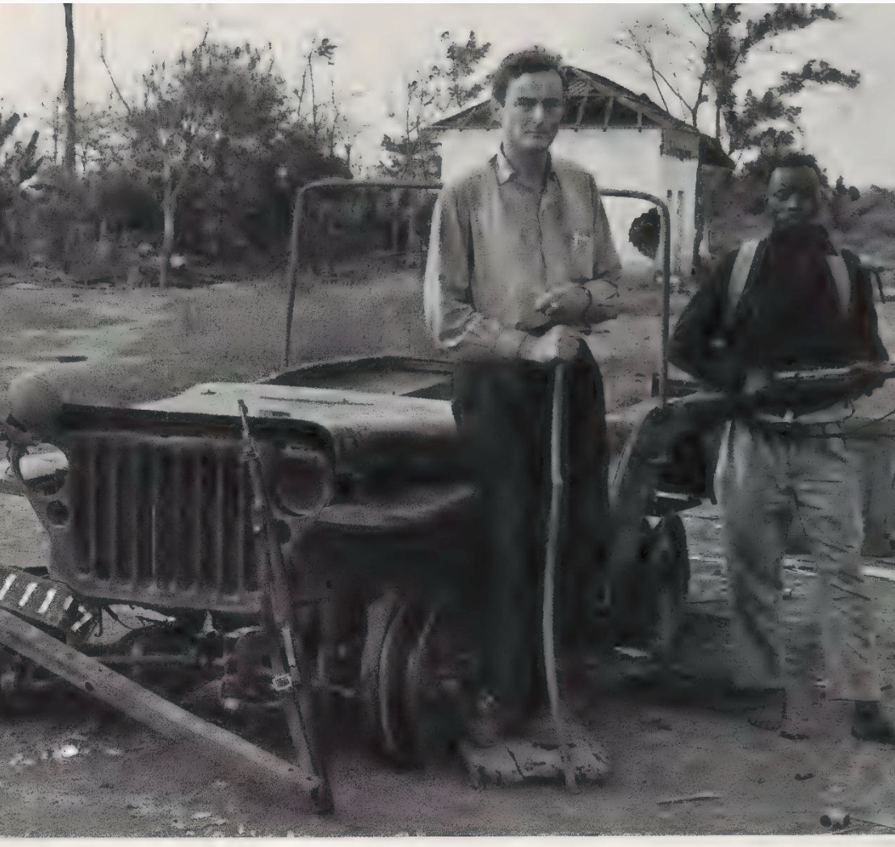

Gavin Young's Suitcase in Slow Boats
March 12, 2026

Overview
This document details Gavin Young's suitcase and packing as described throughout his journey in Slow Boats, from initial packing in Athens to subsequent mentions during his travels toward China. Each reference has been updated to show the specific location where the suitcase is mentioned, rather than just the chunk number.
Initial Packing - Athens, Greece (Before Departure)
At the beginning of his trip in Athens, Gavin Young packed the following items:
Items
- Notebooks, ballpoint pens and books: Conrad's Under Western Eyes and Mirror of the Sea, Ford Madox Ford's Memories and Impressions, Thrillers, Joseph Heller's Good as Gold, Vintage Wodehouse
- Two cameras
- Metal suitcase (purchased at some expense) with combination lock - described as needing "gelignite to open it if the lock was turned"
- Light zip-fastened bag (to complement the heavy metal suitcase)
- Money belt (though he only used it later in the Sulu Sea)
- Old green Grenfell anorak from Vietnam days
- Thick-soled strong shoes and a pair of lighter ones for ashore
- Medicines: Septrin, Mexaform (for diarrhoea), aspirin
- Washed out father's hip flask filled with Scotch
- Newly acquired Polaroid camera
Financial Preparations
- Arranged with bank to send money to certain places along his route
- Avoided travelling with bundles of notes or large numbers of traveller's cheques
Subsequent Mentions Throughout the Trip
The metal suitcase appears repeatedly throughout Slow Boats as a constant companion, mentioned at these specific locations:
Greece to Turkey
- Alcheon, en route from Piraeus to Patmos, Greece: He's glad to find a berth specifically to lodge his ironclad suitcase
- Patmos, Greece (quayside): He lugs his bags below and pushes the suitcase under a lower berth. Later drops it on the quayside with a thump in the middle of the night, drawing curious stares
- Kusadasi, Turkey (steep side street): An old Greek insists on carrying his heavy metal suitcase up a steep side street to a house where he conveyed with signs there would be a room for the night
- Samsun, Turkey (en route from Smyrna to Mersin): Mentions sharing a cabin with only an old Turk whose belongings include a battered suitcase and cardboard box
Turkey to Cyprus
- Yesilada, en route from Mersin to Famagusta, Cyprus: Carries the metal suitcase up the ramp after a recalcitrant truck had been manhandled into the hold. Soon discovers that if he lays on the bunk, the suitcase neatly fills the rest of the cabin. Notes seeing poor Turkish Cypriot families with their "roped suitcases, bundles and boxes of food"
- Famagusta, Cyprus (customs and immigration shed): Police and immigration officials scribble chalk marks on his metal suitcase. Concerns about Muslim inspectors finding certain items in his suitcase during customs (specifically mentions worrying about a collapsible rubber doll)
- Limassol, Cyprus (information officer's office): Describes the ship swarming with people and their "countless bundles and dilapidated suitcases". An information officer agrees to lock his metal suitcase in his office (despite not liking it)
Egypt
- Al Anoud, en route from Limassol to Alexandria, Egypt (vehicle hold): Describes the suitcase as seeming "about to tear my arm from its socket" due to weight and sweat in the vehicle hold
- Alexandria, Egypt (Cecil Hotel): A launchman follows him with his metal suitcase on his shoulder when boarding another vessel
Saudi Arabia
- Patrick Vieljeux, Jedda, Saudi Arabia (deck at head of gangway): He lugs the suitcase down to the deck at the head of the gangway, noting "its metal body seemed solid lead"
United Arab Emirates
- Al Raza, en route from Sharjah to Karachi (wheelhouse bunk): Uses the suitcase as a footrest from his bunk ("Once more I laid my feet on my suitcase and my head on the plastic pillow cover")
- Sharjah, UAE (Sharjah bazaar): In Sharjah bazaar, considers digging out his money belt from the metal suitcase. Notes traveller's cheques were locked behind the suitcase's combination. Mentions accessible items in zip-bag: cameras, binoculars, Gordon's gin, angostura bitters
India
- Herman Mary, en route from Tuticorin to Bombay (deck): Checks the suitcase's combination lock after ashore, ensuring spray hadn't rusted the tumblers
- Tuticorin, India (customs office): Tucks his shipping ticket (Madras to Port Blair) away in his metal suitcase. Turns the combination lock "as if it were a bar of gold"
Key Characteristics of the Suitcase
Throughout the narrative, Young's suitcase is consistently described as:
- Heavy/Metal Construction: Frequently noted for its weight ("seemed solid lead", "heavy metal suitcase")
- Secure Storage: Featured a reliable combination lock that he trusted with valuables and documents
- Distinctive Appearance: Stood out among other travelers' luggage (often noted as being alone with it)
- Durable Construction: Survived various conditions from sea spray to rough handling
- Essential Companion: Served as mobile secure storage for documents, valuables, medicines, and essentials throughout his journey
Usage Patterns
Young used his suitcase in various ways throughout the journey:
- As secure storage for valuables (traveller's cheques, documents, money)
- As furniture (footrest from his bunk)
- As a marker of his identity among other travelers
- As something requiring special handling due to its weight
- As an item that warranted special consideration during customs inspections
Detailed Item Tracking
Each item packed in Athens is tracked throughout the journey to document where and how it is mentioned:
Notebooks, Ballpoint Pens and Books
- Athens (pre-departure): Packed Conrad's Under Western Eyes and Mirror of the Sea, Ford Madox Ford's Memories and Impressions, thrillers, Joseph Heller's Good as Gold, and Vintage Wodehouse
- Patmos, Greece: Seen reading Ford Madox Ford's Memories and Impressions in the first-class lounge, where British husbands acknowledged him with a nod and twist of the lips
- Samos Express: Reading Ford Madox Ford's Memories and Impressions while waiting for the Samos Express, reflecting on international terrorists at the turn of the century
- Throughout journey: Used ballpoint pen to mark ports on his atlas (Smyrna, Alexandria, Port Said, Suez, Jedda, Dubai, Karachi, Bombay, Cochin, Colombo, Calcutta, Madras, Singapore, Brunei, Bangkok, Manila, Hong Kong, Macao, Canton, and Andaman Islands)
- Ritz Bar, Cairo: Returned in evenings to read Under Western Eyes in an upper room
- General use: Books served as both intellectual companions and practical tools for navigation and route planning
Two Cameras
- Athens (pre-departure): Planned to take two cameras for the journey
- Grande Bretagne Hotel, Athens: Friends Jo Menell and John Morgan struggled with cameras and recording equipment in the lobby
- Orfanides's terrace, Athens: John and Jo took their camera to film elderly Greek customers discussing the colonels
- Port Said: Took Polaroid pictures of the crew posing together and singly, with even the nakhoda (captain) joining in
- Al Raza: Continued taking Polaroid pictures to distract everyone from gloom, with crew members eagerly requesting specific shots
- Starling Cook (Maldives voyage): Crew wanted their pictures taken in Polaroid; discovered their names while photographing them (Ali Qasim, Hassan Ali, Musa, Ibrahim, Captain Azia Ali)
- Herman Mary: Took Polaroid pictures after meals, with crew members posing eagerly
- Customs inspections: Cameras were noted and registered by officials in various ports
- General use: Polaroid camera proved invaluable for breaking the ice with shy and hostile strangers, serving as a social lubricant throughout the journey
Metal Suitcase
- Athens (pre-departure): Purchased at some expense with combination lock; salesman claimed it would take "gelignite to open it if the lock was turned"
- Throughout journey: Served as constant companion and secure storage for valuables, documents, and essentials
- Specific uses: Used as footrest from bunk on Al Raza; Checked combination lock after ashore to ensure spray hadn't rusted tumblers; Stored shipping tickets and important documents; Held money belt and valuables considered too risky to carry openly; Served as reference point for locating other possessions in shared spaces
Light Zip-fastened Bag
- Athens (pre-departure): Taken to complement the heavy metal suitcase
- Sharjah bazaar: Contained accessible items including cameras, binoculars, Gordon's gin, and angostura bitters - items needed frequently during the voyage
- General use: Held items needed for quick access, unlike the secure but less accessible metal suitcase
Money Belt
- Athens (pre-departure): Purchased but noted he would only use it later in the Sulu Sea
- Sulu Sea: Used specifically due to concern that pirates might strip and search travelers without checking ordinary-looking belts
- Philippines: Banknotes damaged by salt water and sweat caused hesitation in using them for a long time after the Sulu Sea episode
- Sharjah bazaar: Considered digging it out of metal suitcase but decided against it as traveller's cheques were already secure behind the suitcase's combination
- General use: Served as emergency currency protection in high-risk areas, though ultimately less needed than anticipated
Old Green Grenfell Anorak (from Vietnam days)
- Athens (pre-departure): Taken for wet and cold conditions at sea
- Patmos cabin: Put across the suitcase under a lower berth
- Yesilada cabin: Dumped on an upper bunk near the porthole like "a prospector staking a claim in the Klondike"
- Al Anoud: Followed him up the stairs with the anorak and leather bag when boarding
- Starling Cook (Maldives): Rolled into a pillow for sleeping on the ledge/bunk
- Herman Mary: Hung over wooden chair on deck with several packs of film in the pocket
- General use: Provided warmth and protection from elements, served as makeshift pillow, and retained sentimental value from Vietnam service
Thick-soled Strong Shoes and Lighter Ones for Ashore
- Athens (pre-departure): Packed both types
- Patmos deck: Observed Greek women swiftly commandeering benches and hauling off shoes, exposing "crimson toenails and varicosed and unshaven legs"
- Samos Express: Captain seen wearing gym shoes
- Various ports: Noted local footwear customs - Egyptian shoe shiners, Arabian peasants with wide, thick-soled feet requiring special accommodation
- Alexandria bar: Egyptian man seen rubbing polish on shoes for coins
- General use: Adapted to different climates and activities - sturdy shoes for deck work/shore excursions, lighter shoes for town exploration
Medicines (Septrin, Mexaform for diarrhoea, aspirin)
- Athens (pre-departure): Purchased Septrin, Mexaform (for diarrhoea), and aspirin
- Al Raza: Offered two fat fingers of gin to Mir Mohamed who was suffering (not aspirin, but alternative remedy)
- Starling Cook: Crewman Musa asked for medicine for penis pain, imagining freely procurable treatments in Colombo's seamen's bordello
- General medical context: Encountered Egyptian man studying medicine in Madras who appreciated Vintage Wodehouse; noted animal protection societies' silence on certain atrocities
- General use: Carried for preventive and curative purposes, though sometimes substituted with local remedies like gin
Washed out Father's Hip Flask filled with Scotch
- Athens (pre-departure): Prepared by washing out father's hip flask and filling it with Scotch
- Cornish childhood memory: Recalled childhood prayers involving hip flasks with picnickers, surfers, flower gatherers, and adventurous walkers
- Port Said Scotch: Had available in Saudi Arabia (dry state) for personal consumption
- Al Wid bar: Consumed whisky from father's old flask before sleeping
- Egyptian pilots: Noted as expecting brandy, cigarettes, and eau de Cologne as customary payments
- Saudi Arabian élite: Despite official puritanism, known to enjoy smuggled Scotch behind high marble walls
- General use: Served as personal comfort item and social lubricant in various ports, particularly valued in regions where alcohol was restricted or expensive
Newly Acquired Polaroid Camera
- Athens (pre-departure): Acquired specifically for the journey
- Breaking the ice: Described as "almost as useful to me in breaking the ice with shy and hostile strangers as beads were to explorers of old"
- Port Said: Used extensively to photograph crew members, who posed eagerly and requested multiple shots
- Al Raza: Continued use to distract from gloom, with specific crew members requesting particular poses
- Starling Cook (Maldives): Crew members wanted their pictures taken; discovered their names while photographing them
- Customs encounters: Cameras were noted and registered by officials in various ports
- Herman Mary: Used after meals for crew portraits
- General use: Proved invaluable as a social tool, creating instant connections and memorable interactions with crew members across different cultures and languages
Summary of Item Usage
Throughout Slow Boats, Young's possessions served both practical and social functions:
- Practical necessities: Shoes, medicines, anorak for protection and comfort
- Documentation and navigation: Notebooks, books, pen for recording journey and planning route
- Social bridges: Cameras (especially Polaroid) for breaking language barriers and creating connections
- Security and valuables: Metal suitcase and money belt for protecting documents and currency
- Personal comforts: Hip flask with Scotch for familiarity and relaxation in unfamiliar settings
- Cultural adaptation: Adjusting use of items based on local customs and availability (e.g., substituting gin for medicine)
The metal suitcase remained the central organizing element, with other items either stored within it (money belt, valuables) or kept accessible in the zip-bag (cameras, frequently used items), creating an efficient system for managing possessions during extended sea travel.